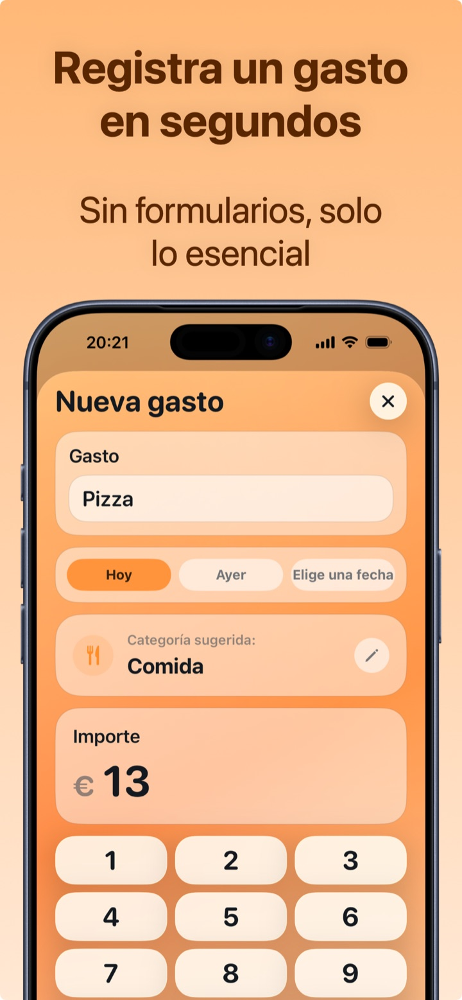

Cómo llevar el control de tus gastos diarios
Controlar los gastos es el primer paso para dejar de preguntarte adónde fue el dinero a fin de mes. El problema no es empezar: es no abandonar tras una semana. En esta guía encontrarás el método que aguanta en el tiempo, y cómo aplicarlo en dos segundos al día.
Por qué merece la pena anotar los gastos
Quien controla sus salidas de dinero descubre casi siempre lo mismo: los gastos pequeños y frecuentes pesan más que los grandes. Un café de 1,50 € en el bar todos los días son unos 550 € al año; el reparto a domicilio dos veces por semana supera los 1.000 €. La sorpresa no son los 600 € de alquiler: son los 300 € al mes de «varios» que no recuerdas haber gastado.
Anotar los gastos no sirve para culparte: sirve para decidir con los números delante qué mantener y qué recortar.
Por qué el papel y Excel fallan
- El cuaderno funciona mientras estás en casa. El gasto lo haces en el bar, en el súper, online: cuando llegas al cuaderno ya has olvidado la mitad de los importes.
- La hoja de Excel exige sentarte al ordenador, recordar todo e introducirlo a mano. Es el clásico buen propósito de la primera semana de enero.
- La memoria subestima sistemáticamente: los estudios sobre consumo muestran que a fin de mes recordamos bien los gastos grandes y olvidamos precisamente los pequeños y recurrentes — los que marcan la diferencia.
El método que funciona: 3 reglas
- Registra el gasto en el momento en que lo haces. No «esta noche», no «el domingo»: al momento, desde el teléfono que ya tienes en la mano. Si el registro lleva más de unos segundos, no lo harás.
- Usa las categorías, no las notas largas. No hace falta escribir un diario: basta con saber que 153 € este mes fueron a «Comida» y 120 € a «Compras».
- Mira los totales una vez a la semana. Dos minutos el domingo: cuánto he gastado, en qué, ¿voy bien para el mes? Aquí es donde el seguimiento se convierte en ahorro.

Cómo controlar los gastos con Crena
- Descarga Crena gratis y abre la app: sin registro, sin cuenta que vincular.
- Cuando gastes, toca Gastos: escribe el nombre (p. ej. «Pizza»), la app sugiere la categoría sola, escribes el importe y listo. Dos segundos, de verdad.
- Para los gastos de cada día — café, pan, gasolina — añade el widget a la pantalla de Inicio: un toque y el gasto queda registrado, sin abrir la app.
- El domingo abre Estadísticas: ves el total del mes, las categorías que más pesan y tu top 3 de gastos.
- Fija también un presupuesto mensual: así cada gasto registrado actualiza en tiempo real cuánto te queda.
Preguntas frecuentes
¿Cuánto tiempo lleva cada día?
¿Y si me olvido de anotar un gasto?
¿Mejor app u hoja de Excel?
Prueba Crena gratis
Gastos en dos segundos, presupuesto mensual y estadísticas claras. Sin registro y sin vincular la cuenta.
Descargar enApp Store